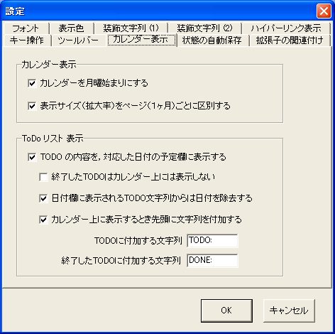

[カレンダー表示]タブは，カレンダーの外見およびTODOをカレンダー上に表示するための設定を含んでいます．
| 名称 | 効果 |
|---|---|
| カレンダーを月曜始まりにする | カレンダーの左端は，通常は日曜ですが，この欄にチェックすると月曜に変わります． |
| 表示サイズ（拡大率）をページ（１ヶ月）ごとに区別する | 表示縮尺（拡大率）は，通常はプログラム全体に適用されます． もし１ヶ月ごとに拡大率を変えたい場合は，この欄にチェックします． |
| TODOの内容を，対応した日付の予定欄に表示する (*1) | この欄にチェックすると，TODOリストに記述した文字列に日付が含まれている場合，その日付に，TODOの内容を表示します． このオプションの振る舞いは，以下のオプションによってカスタマイズされます． |
| 終了したTODOはカレンダー上には表示しない | *1 にチェックした場合にのみ有効です．終了したとチェックしたTODOはカレンダー上に表示しません． |
| 日付欄に表示されるTODO文字列からは日付を除去する | *1 にチェックした場合にのみ有効です．カレンダー上にTODOの内容を表示するとき，日付の部分を削除します． このオプションを有効にした場合， TODO欄に含まれるすべての日付が隠される （複数の日付を含んだTODOも対象となる）ことに注意してください． 「〜の締め切り 2006/1/10」のように，カレンダー上に表示するにあたって， 日付が冗長に見えるようなTODOの書き方しかしない場合に，チェックをつけてください． このオプションの指定は，ポップアップ文字列やエクスポート文字列にも影響を与えますが， 検索機能には影響を与えません. |
| カレンダー上に表示するとき先頭に文字列を付加する | *1 にチェックした場合にのみ有効です．カレンダー上に表示するとき，TODO項目の先頭に "TODO:" や "DONE:" といった文字列を付加することで， カレンダー上に表示されている内容がTODOリスト由来のものであることを明示します． |